⚪ All Neutral Pals in Palworld (1.0)
There are 42 neutral-element Pals in Palworld 1.0 — 23 can be caught in the wild and 19 are breed-only. Sorted by Paldeck number. Click any Pal for its full breeding guide.
Complete Neutral Pal list
| # | Pal | Element | Work suitability | How to get |
|---|---|---|---|---|
| #1 | 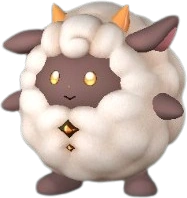 Lamball | Neutral | Handiwork 1, Transporting 1, Farming 1 | ✅ Wild |
| #2 | Neutral | Handiwork 1, Gathering 1, Mining 1, Transporting 1 | ✅ Wild | |
| #3 | 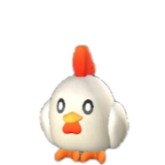 Chikipi | Neutral | Gathering 1, Farming 1 | ✅ Wild |
| #6 | 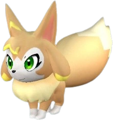 Vixy | Neutral | Gathering 1, Farming 1 | ✅ Wild |
| #8 | 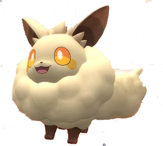 Cremis | Neutral | Farming 2, Gathering 1 | ✅ Wild |
| #10 | Grass/Neutral | Planting 1, Gathering 1, Transporting 1 | 🥚 Breed only | |
| #14 | Grass/Neutral | Planting 1, Gathering 1 | 🥚 Breed only | |
| #20 | 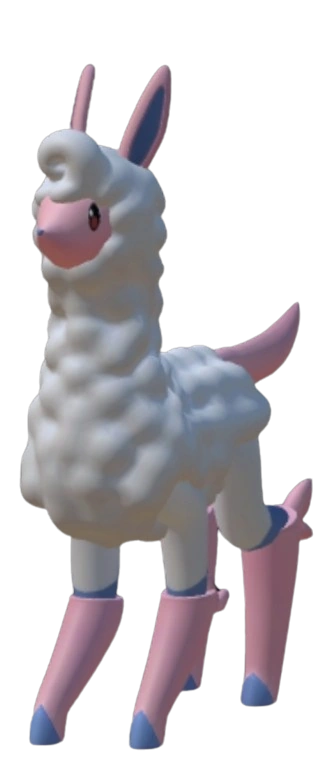 Melpaca | Neutral | Farming 2 | ✅ Wild |
| #21 | 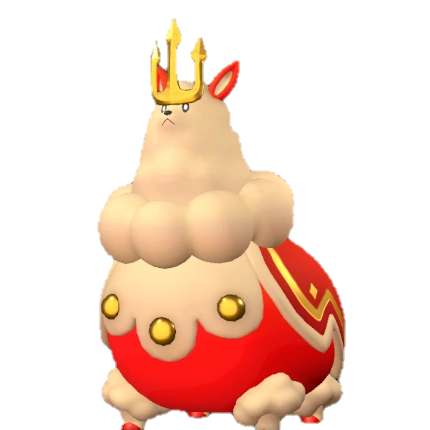 Kingpaca | Neutral | Gathering 2 | ✅ Wild |
| #30 | Killamari Primo | Neutral/Water | Transporting 2, Watering 1, Gathering 1 | 🥚 Breed only |
| #32 | 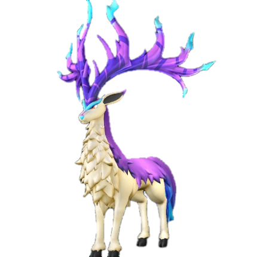 Eikthyrdeer | Neutral | Lumbering 2 | ✅ Wild |
| #33 | 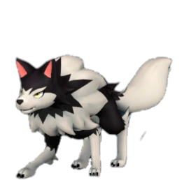 Direhowl | Neutral | Gathering 1 | ✅ Wild |
| #39 | 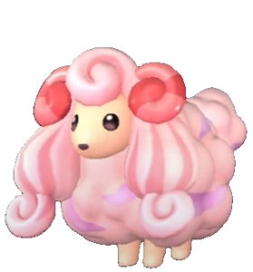 Woolipop | Neutral | Farming 1 | ✅ Wild |
| #40 | 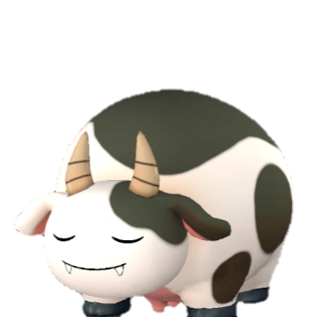 Mozzarina | Neutral | Farming 2 | ✅ Wild |
| #44 | 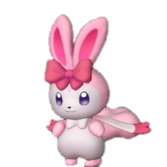 Ribbuny | Neutral | Handiwork 1, Gathering 1, Transporting 1 | 🥚 Breed only |
| #48 | Gloopie Primo | Water/Neutral | Watering 2, Handiwork 2, Transporting 2 | 🥚 Breed only |
| #49 | 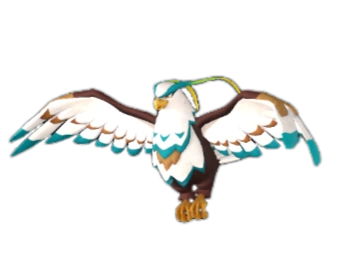 Galeclaw | Neutral | Gathering 2 | ✅ Wild |
| #51 | 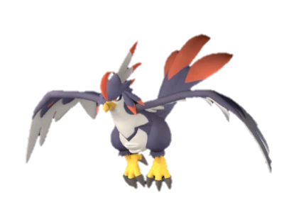 Nitewing | Neutral | Gathering 2 | ✅ Wild |
| #53 | 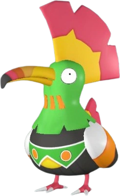 Tocotoco | Neutral | Gathering 1 | ✅ Wild |
| #70 | 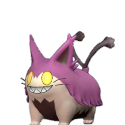 Grintale | Neutral | Gathering 3 | ✅ Wild |
| #74 | 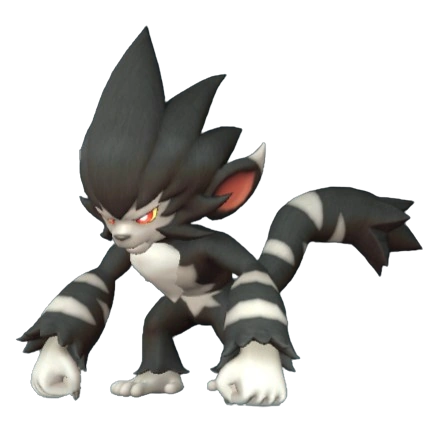 Gorirat | Neutral | Lumbering 3, Transporting 3, Handiwork 2 | ✅ Wild |
| #82 | 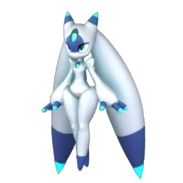 Lunaris | Neutral | Handiwork 4, Gathering 2, Transporting 2 | ✅ Wild |
| #83 | 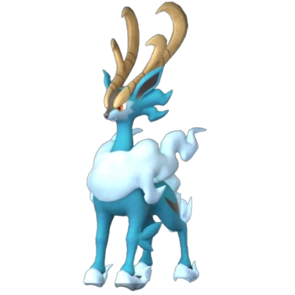 Fenglope | Neutral | Lumbering 3 | ✅ Wild |
| #116 | 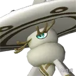 Sibelyx Primo | Neutral | Farming 4, Medicine Production 3 | 🥚 Breed only |
| #127 | 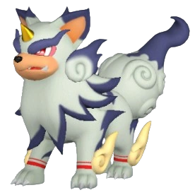 Yakumo | Neutral | Gathering 2 | ✅ Wild |
| #130 | 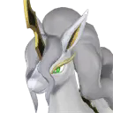 Starryon Primo | Neutral | Gathering 7 | 🥚 Breed only |
| #139 | 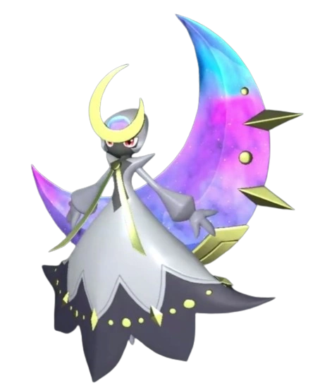 Selyne | Dark/Neutral | Medicine Production 6, Handiwork 1, Transporting 1 | ✅ Wild |
| #142 | Neutral | Mining 6 | 🥚 Breed only | |
| #144 | 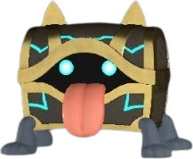 Mimog | Neutral | Transporting 2, Gathering 1 | ✅ Wild |
| #155 | Dogen | Neutral | Handiwork 4, Gathering 3, Lumbering 3, Transporting 3, Medicine Produc | ✅ Wild |
| #157 | 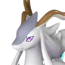 Celesdir | Neutral | Lumbering 7, Gathering 4 | 🥚 Breed only |
| #162 | 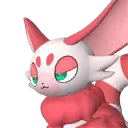 Valentail | Neutral | Gathering 2 | 🥚 Breed only |
| #170 | 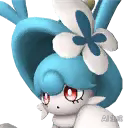 Lapure | Neutral | Handiwork 6, Gathering 5 | 🥚 Breed only |
| #182 | 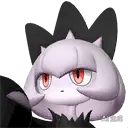 Solenne | Dark/Neutral | Handiwork 8, Gathering 4, Transporting 2 | 🥚 Breed only |
| #197 | 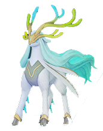 Hartalis | Neutral | Gathering 7, Lumbering 7 | 🥚 Breed only |
| #198 | Neutral | Lumbering 6, Mining 6 | ✅ Wild | |
| #204 | 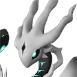 Astralym | Neutral | — | 🥚 Breed only |
| #10004 | Neutral | Transporting 1 | 🥚 Breed only | |
| #10006 | Neutral | Transporting 1 | 🥚 Breed only | |
| #10008 | Neutral | Lumbering 1 | 🥚 Breed only | |
| #10009 | Neutral | Gathering 1 | 🥚 Breed only | |
| #10010 | Neutral | Gathering 1 | 🥚 Breed only |
🥚 Want a breed-only Pal? The PalTool reverse breeding calculator finds the shortest path from wild-catchable parents.
Work rankings: ⛏️ Mining · 🔥 Kindling · 🔨 Handiwork · 🪓 Lumbering · 📦 Transporting · 🌱 Planting · 💧 Watering · 🧺 Gathering · ⚡ Electricity Generation · 💊 Medicine Production · ❄️ Cooling · 🐄 Farming
Pals by element: 🔥 Fire · 💧 Water · 🌿 Grass · ⚡ Electric · ❄️ Ice · 🪨 Ground · 🌑 Dark · 🐉 Dragon · ⚪ Neutral
Data sourced from Palworld 1.0 game files. Last updated: July 2026.